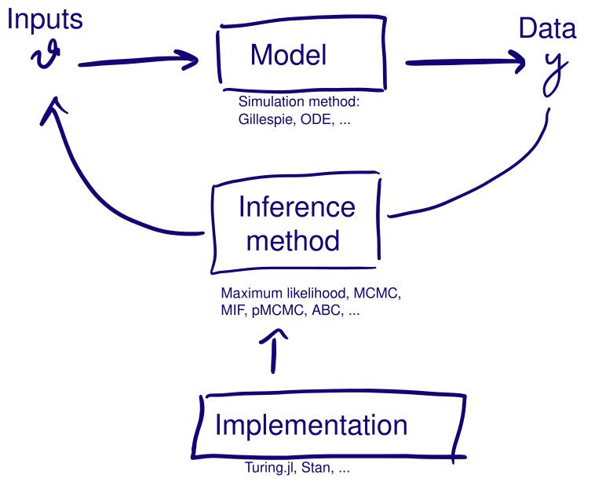

What we did, the bigger picture, and where to go next
Monday. A deterministic model puts all the mass of on one trajectory, so and you evaluate it directly.
Tuesday. The stochastic model made it an integral over every trajectory, , with no closed form.
Wednesday. The particle filter estimated that integral without bias, and pMCMC sampled with the estimate.
Thursday. ABC dropped it for .

Every fit settles four questions, whether or not you notice deciding them (Funk and King 2020). Three of them are labelled on the loop:
To fit SEIT4L we picked a stochastic model, a Gillespie simulator, pMCMC, and Julia with Turing.jl.
The main criteria are:
The right model comes before any inference procedure. Can it generate data like yours, for the purpose you built it for?
A deterministic model puts all the mass of on one trajectory, so it cannot represent process noise. That matters in a small population, where stochastic fade-out is a real possibility rather than a rounding error.
Total cost is the cost of one simulation, times the number of simulations the method needs.
The simulation method and the implementation: an ODE solver against Gillespie, compiled against interpreted.
The inference method. NUTS reaches a given ESS in far fewer iterations than a random walk, and rejection ABC needs very large numbers of cheap forward simulations.
pMCMC uses a noisy likelihood estimate and still targets the exact posterior. Run it for long enough and the Monte Carlo error falls as far as you like.
ABC does not. and the choice of bound the accuracy however long you run it, so more computation sharpens an answer that stays biased.
Your time: writing, testing, debugging.
Software constrains method: a package implements what it implements.
The model constrains method: a model too slow to simulate rules out any procedure needing a million runs.
In PPLs you write down the model specification, and the language takes care of the simulator and the inference.
One definition of SEIT4L, and Turing will run NUTS() on a tractable differentiable likelihood, MH() or Emcee() where there is no usable gradient, and SMC(), PG() or CSMC() where the likelihood has to be estimated from simulations. Wednesday was that: the model unchanged, the particle filter’s estimate added with @addlogprob!.
Slow, sticky, or divergent is often the sampler, and often fixable: retune the proposal, reparameterise the model raise the particle count until the variance of the log-likelihood estimate is around one.
Biased, overconfident, or wrong is not due to the sampler.
Uniform(1, 20) on says 19 is as plausible as 2Two separate modes of checking
Sampler problems: R̂, divergences, low ESS, sticky traces.
Model problems: posterior predictive checks, predictive p-values.
Both are necessary. A converged chain from a misspecified model looks exactly like a converged chain from an adequate one.
1. Start with the question. Name the quantity you need to learn and the data that can inform it.
2. Write the generative story. Separate the epidemic process from the observation process, and decide where stochasticity belongs.
3. Simulate before fitting. Draw parameters from the prior and run the whole model. If it cannot generate plausible data, revise the model or prior now.
4. Choose a method that fits the model and your computational budget.
5. Check the computation. Use multiple runs, traces, R̂, ESS and method-specific warnings to establish that the algorithm explored its target.
6. Check the model. Use posterior predictive checks and sensitivity analyses to ask whether the fitted model reproduces the features that matter to your question. If it does not, revise the model and go round again.
A workflow for infectious disease modelling (Abbott et al., work in progress) sets out the full version, including how to combine data sources.
All four are on the course site, written to be worked through on your own.
Across the course site, Going further and advanced sections point to extensions of the methods we taught and the literature behind them.
Nowcasting and forecasting infectious disease dynamics is our course on real-time infectious disease modelling.
Synthesis and next steps